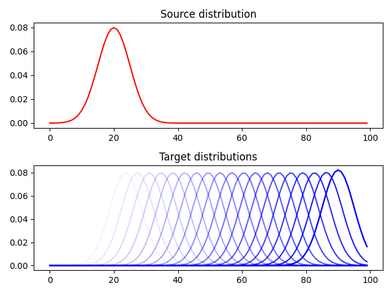

Note
Click here to download the full example code
Plot multiple EMD¶
Shows how to compute multiple EMD and Sinkhorn with two differnt ground metrics and plot their values for diffeent distributions.
# Author: Remi Flamary <remi.flamary@unice.fr>
#
# License: MIT License
import numpy as np
import matplotlib.pylab as pl
import ot
from ot.datasets import make_1D_gauss as gauss
Generate data¶
n = 100 # nb bins
n_target = 50 # nb target distributions
# bin positions
x = np.arange(n, dtype=np.float64)
lst_m = np.linspace(20, 90, n_target)
# Gaussian distributions
a = gauss(n, m=20, s=5) # m= mean, s= std
B = np.zeros((n, n_target))
for i, m in enumerate(lst_m):
B[:, i] = gauss(n, m=m, s=5)
# loss matrix and normalization
M = ot.dist(x.reshape((n, 1)), x.reshape((n, 1)), 'euclidean')
M /= M.max()
M2 = ot.dist(x.reshape((n, 1)), x.reshape((n, 1)), 'sqeuclidean')
M2 /= M2.max()
Plot data¶
Compute Sinkhorn for the different losses¶
reg = 1e-2
d_sinkhorn = ot.sinkhorn2(a, B, M, reg)
d_sinkhorn2 = ot.sinkhorn2(a, B, M2, reg)
pl.figure(2)
pl.clf()
pl.plot(d_emd, label='Euclidean EMD')
pl.plot(d_emd2, label='Squared Euclidean EMD')
pl.plot(d_sinkhorn, '+', label='Euclidean Sinkhorn')
pl.plot(d_sinkhorn2, '+', label='Squared Euclidean Sinkhorn')
pl.title('EMD distances')
pl.legend()
pl.show()

Out:
/home/circleci/project/examples/plot_compute_emd.py:102: UserWarning: Matplotlib is currently using agg, which is a non-GUI backend, so cannot show the figure.
pl.show()
Total running time of the script: ( 0 minutes 0.746 seconds)